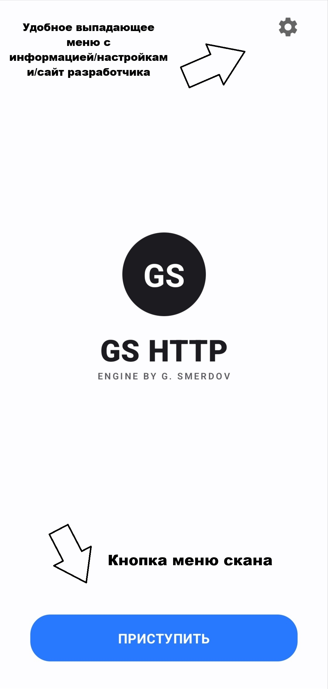
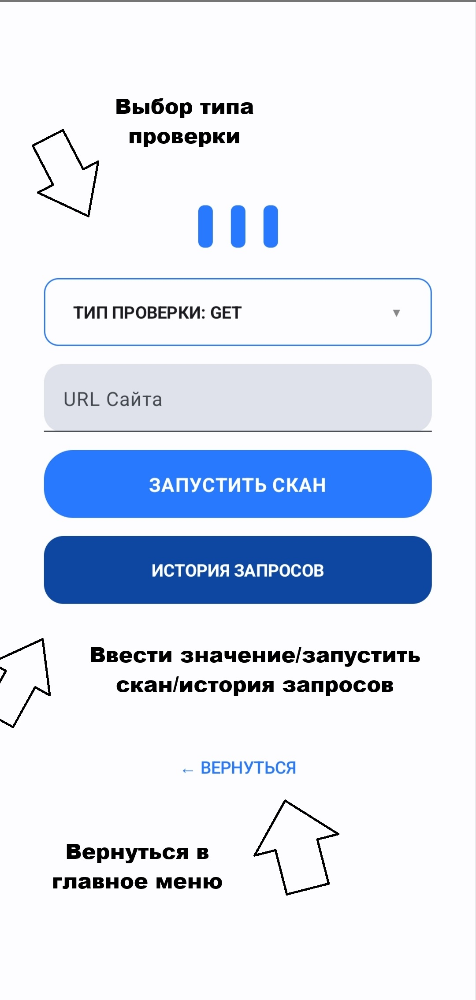
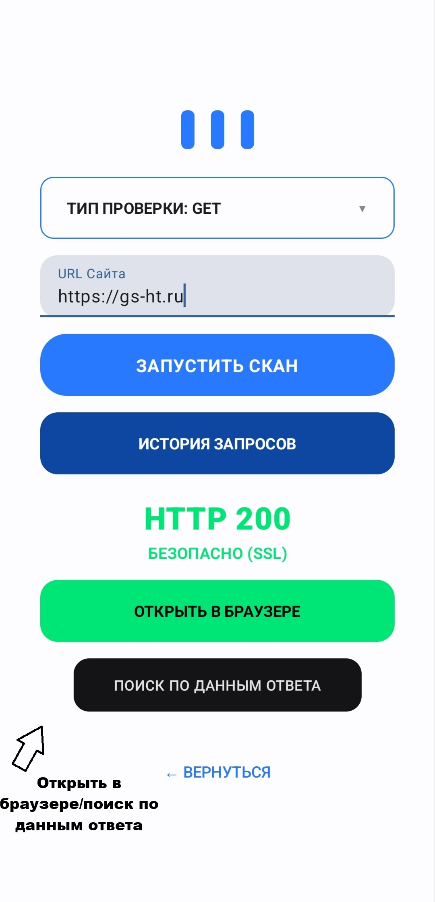
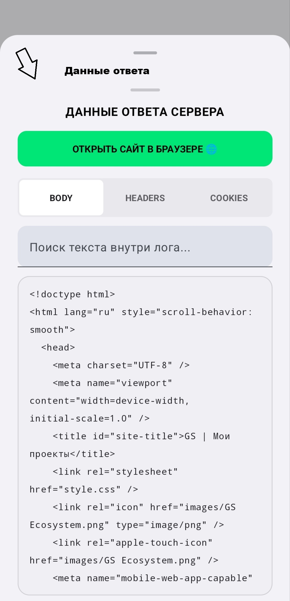
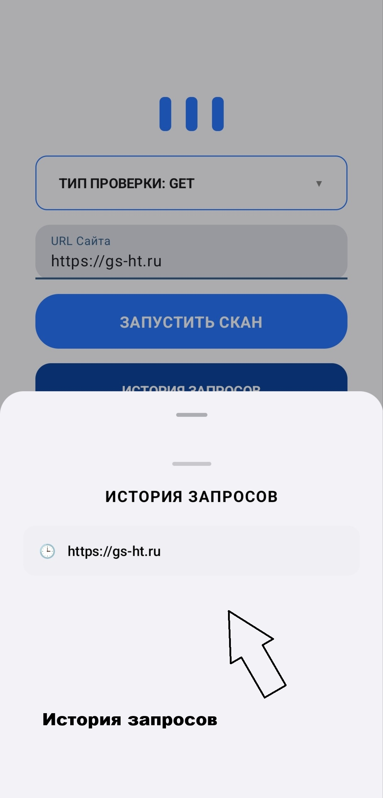
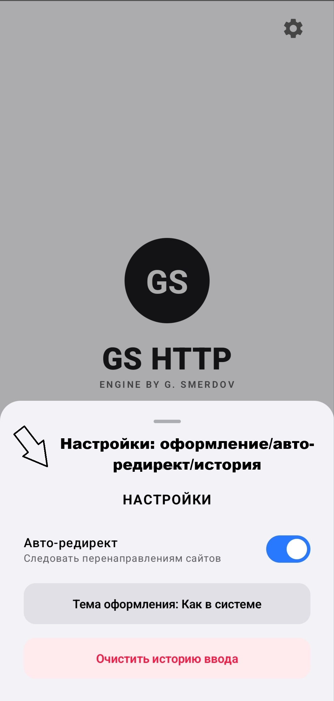
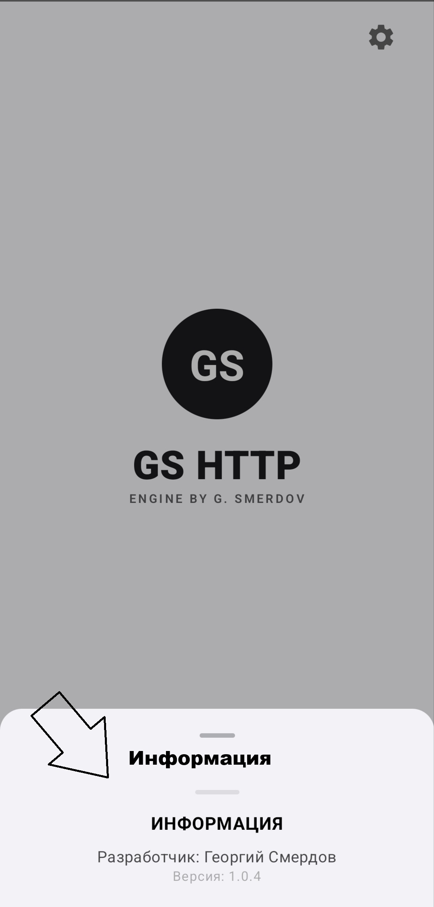

Вводная часть
Установка приложения
Запуск приложения
Поиск по url
Данные ответа сервера
История поиска
Настройки приложения
Окно информации
Частая ошибка
Завершение/Связь
GS HTTP — это легкая и быстрая утилита, созданная специально для веб-разработчиков, системных администраторов и всех, кто работает с API и сетевыми запросами.
С помощью GS HTTP(далее-приложение) вы сможете:
• Мгновенно узнавать HTTP-статус любого сайта (200 OK, 404 Not Found и др.).
• Анализировать технические заголовки (Headers) ответов сервера.
• Проверять Cookies, установленные веб-ресурсами.
Приложение максимально минималистично: в нем нет регистрации и сбора личных данных.
Весь необходимый функционал доступен сразу после запуска.
Идеальный помощник для оперативной диагностики сайтов прямо с вашего смартфона.
Системные требования:
Минимальная версия: Android 7
Скачать приложение можно в двух сторах для android приложений: RuStore, RuMarket
После того как вы установили приложение, то вы сразу же можете его запустить, никаких дополнительных настроек и компонентов для его работы не требуются.

Сейчас мы рассмотрим первую работу приложения, как проверить определённый сайт на наличие его доступности и узнать дополнительные подробности.


Как уже и говорилось ранее после успешного запроса, можно посмотреть данные ответа сервера, нажав на кнопку "Поиск по данным ответа".




Здесь я хочу подметить всего лишь одну ошибку которая может возникнуть у многих пользователей при использовании приложения.
Эта ошибка связана с некоректно введённым url в меню "поиск по url", например таким https: //gs-ht.ru или таким https:/gs-ht.ru.
Казалось бы из-за одного пробела или пропускного слэша такая ошибка.
После того как вы нажмёте кнопку "Запустить скан", приложение вылетит это нормально вы его сможете снова запустить.
Ошибка происходит из-за того, что пока в приложении нет полноценной обработки ошибок, но вскоре она обязательно появится и будет просто выводить неккоректный формат ввода.
На этом пока документация подошла к концу, но она будет обновляться при добавлений новых функций.
Следить за новостями проекта можно в telegram-канале.
Связаться можно по почте:
georgsmerdov@outlook.com: en
smerdovgeorgy@yandex.ru: ru
Написать в боты мессенджеров:
MAX чат-бот command: /support
Telegram-бот command: /support
© 2026 Георгий Смердов (ГС Екосистем).
Все права защищены.